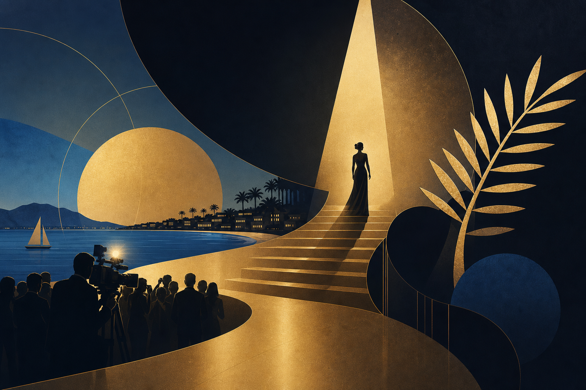

Key Takeaways
- Cannes Lions 2026 opens with [INSERT: attendance figure] delegates from [INSERT: number] countries
- The Beyond the Beach series by The Upside Journal cuts through the surface to reveal what's actually happening at the festival
- Day 1 theme: the gap between what's on stage and what's happening in private meetings
- Follow real-time updates across all Upside channels
[FRAMEWORK — Update with live observations throughout Day 1]
09:00 — The Palais Opens
[INSERT: Description of opening atmosphere, crowd energy, notable attendees spotted]
The first thing you notice at Cannes on Day 1 is the energy differential between the lobby and the main stage. On stage, the programming is polished — rehearsed keynotes, moderated panels, curated "spontaneous" moments. In the lobby, the energy is raw — hurried introductions, people scanning lanyards, the subtle choreography of "accidentally" bumping into the right person.
This is the Cannes that matters, and it's the Cannes that The Upside Journal is here to cover.

The Beyond the Beach Thesis
Every media outlet at Cannes covers the beach. The yacht parties. The branded sunglasses. The rosé.
Beyond the Beach is different. This series asks a single question: what happened today that will still matter in six months?
We're tracking three signals:
Signal 1: Deal Momentum
Which companies are taking meetings with intent? ConcordeApp's relationship intelligence is mapping the interaction density across key venues — when clusters form around specific people or companies, that's an early indicator of deal activity.
Signal 2: Narrative Shifts
What language is changing? Every Cannes has a defining vocabulary shift. In 2024, it was "purpose." In 2025, it was "AI-native." What will 2026's be? We're listening for the new phrases entering the lexicon.
Signal 3: Absence Signals
Who isn't here — and what does that tell us? The companies and executives who skip Cannes are often making a louder statement than those who attend.
11:00 — First Panel Dispatch
[INSERT: Panel title, speakers, key quotes, crowd reaction]
What was said: [INSERT]
What it means: [INSERT analysis]
The question nobody asked: [INSERT the provocative angle]
14:00 — The Lunch Intelligence
[INSERT: Where power lunches are happening, which restaurants are booked out, who was seen meeting whom]
The Cannes lunch economy is its own data set. La Pizza, Le Festival, and the hotel restaurants along the Croisette become impromptu boardrooms. The table configuration tells you everything: two people equals negotiation, four people equals partnership discussion, eight-plus equals celebration or pitch.
16:00 — Afternoon Sessions
[INSERT: Afternoon panel highlights, notable moments, crowd shifts]
By 4 PM on Day 1, the self-selection has begun. The delegates who are here for content are in sessions. The delegates who are here for deals have migrated to the hotels and beach clubs. The delegates who are here for the vibes are already at the rosé.
All three groups are legitimate. But only one generates measurable ROI.
18:00 — Evening Begins
[INSERT: Key evening events, who's hosting, expected attendance]
The transition from daytime Cannes to evening Cannes is the most important moment of each day. This is when formality drops, when conversations become candid, and when the deals that were circled during the day get advanced.
Day 1 Takeaways
[INSERT: Three bullet-point summary of the most important things that happened]
1. [INSERT] 2. [INSERT] 3. [INSERT]
What to Watch for Day 2
[INSERT: Preview of Day 2 programming and meetings]
This is a live-updated piece. Refresh for the latest dispatches from the Croisette.
Published in The Upside Journal — live from Cannes Lions 2026.
Watch: Cannes Lions 2026
https://www.youtube.com/watch?v=XnxqhhurXJo
Video by Making Science
FAQ
Q: How can I follow Cannes Lions 2026 live? A: The Upside Journal's Beyond the Beach series provides real-time dispatches at theupsidejournal.com, with moment-by-moment updates on X, Instagram, and TikTok.
Q: What is the Beyond the Beach series? A: Beyond the Beach is The Upside Journal's live coverage series at Cannes Lions, focused on the deals, narratives, and relationship signals that will matter beyond the festival — not just the beach parties and panel highlights.
About the Author Chaste Inegbedion is the co-founder of The Upside Journal and CEO of ConcordeApp. He writes at the intersection of technology, creativity, and global development.